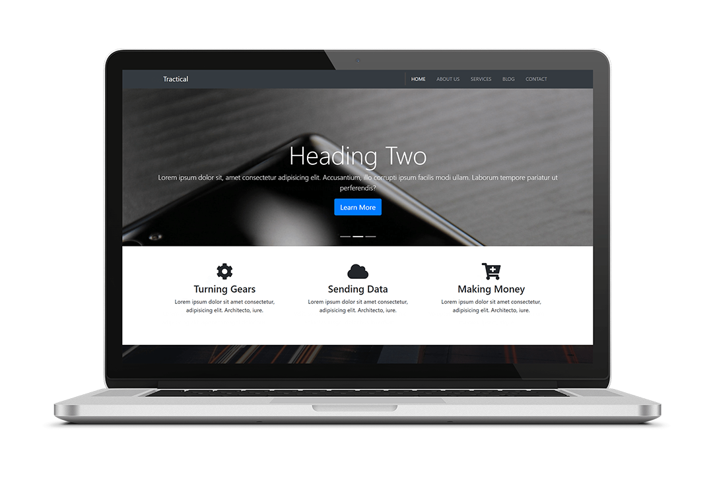
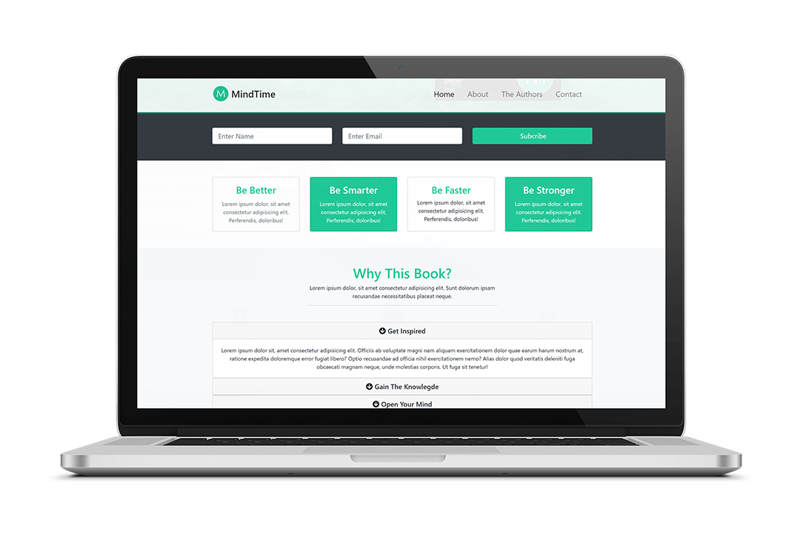

Projekte
Die Besten Nachbarn

Tracticle Web
Mind Time Web
Blogmanager Webapplikation

Ich bin UX-Expertin, Produkt Designerin und Front-End Entwicklerin aus Berlin. Ich erstelle Konzepte und entwickle Software sowohl für mobile Applikation, als auch für Webseiten und Webanwendungen. Außerdem interessiere ich mich sehr für Lösungen mit AR Technologien. Besonders wichtig ist mir das Software intuitiv nutzbar ist, schön aussieht und auch Spass bei der Nutzung bereitet. Das Arbeiten in einem multinationalen Umfeld schätze ich besonders. Nicht zuletzt deshalb habe ich Teile meines Studiums in Südkorea absolviert und in internationalen Unternehmen in Spanien und Deutschland gearbeitet.